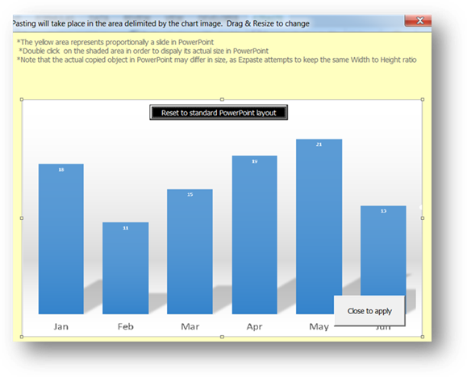
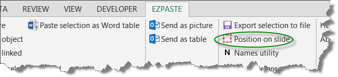
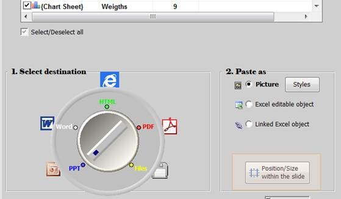

EzPaste allows you to control the exact positioning and sizing of the objects in the target PowerPoint slides. This operation is accomplished by means of a special form whose blank area proportionally represents a regular PowerPoint slide. A shaded rectangle within the form, representing the objects being pasted, could be dragged/resized in order to reflect the desired layout

The pasted object is then pasted to the slide within the area represented by the chart image
You may load the positioning form from:
EzPaste toolbar

EzPaste main form:

Important notices
· EzPaste will always paste the object while respecting the original ratio between the width and the height, in order to prevent distortion. That is why, for geometrical reasons, the shaded area will not always be entirely filled by the pasted object
· EzPaste will always start pasting along the top and left boundaries that will always look identical to those of the shaded area. The right/bottom boundaries are those that might be altered. The pasted image will never overflow the area delimited by the shaded rectangle
· You must close the form in order to make the new layout available for EzPaste
· The Layout is saved along with the Excel file to which it refers and available when the file is reopened
By Double clicking on the image chart, a new form will be opened showing the exact dimensions of the layout